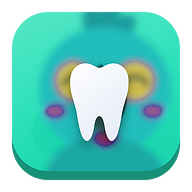

Araradental · Flare OdontologiaPolítica de privacidade
Esta política explica como a Flare Odontologia (FLARE ODONTOLOGIA LTDA, CNPJ 48.378.104/0001-60), por meio do sistema Araradental, coleta, usa, guarda e protege os dados pessoais de pacientes, interessados (leads) e pessoas que conversam com a clínica pelo WhatsApp, Instagram, Facebook Messenger e outros canais. Ela segue a Lei Geral de Proteção de Dados (Lei nº 13.709/2018, LGPD), o Código de Ética Odontológica e as normas do Conselho Federal de Odontologia sobre prontuário.
1. Quem é o controlador
O controlador dos dados é a FLARE ODONTOLOGIA LTDA (Flare Odontologia), CNPJ 48.378.104/0001-60, com sede em Rua Maestro João Gomes de Araújo, 106, Sala 141 (cobertura), Água Fria, São Paulo/SP, CEP 02332-020. Encarregado pelo tratamento de dados (DPO): Daniel Almeida, contato clinicaflareodontologia@gmail.com.
O Araradental é o sistema de gestão (CRM e prontuário) usado pela clínica. Ele roda em computador da própria clínica; os dados ficam armazenados nesse computador e nas cópias de segurança da clínica.
2. Quais dados coletamos
- Cadastro: nome, telefone, e-mail, CPF, data de nascimento, endereço, convênio e como conheceu a clínica.
- Dados de saúde (dados sensíveis): anamnese, odontograma, plano de tratamento, evoluções, fotos clínicas, radiografias, tomografias e documentos assinados.
- Mensagens: conversas trocadas com a clínica pelo WhatsApp, Instagram Direct, comentários e menções no Instagram, Facebook Messenger e outros canais, incluindo o nome e a foto de perfil públicos da conta e os arquivos enviados (fotos, áudios, vídeos, documentos).
- Anúncios: quando você chega por um anúncio da Meta (Facebook/Instagram), recebemos as informações que você preencheu no formulário do anúncio e a identificação do anúncio de origem.
- Financeiro: orçamentos, pagamentos, boletos e notas fiscais.
- Agendamento: datas de consultas, faltas, confirmações e respostas a lembretes.
3. Para que usamos os dados e com qual base legal
- Prestar o atendimento odontológico e manter o prontuário: tutela da saúde e cumprimento de obrigação legal (art. 7º, II e VIII; art. 11, II, "a" e "f" da LGPD).
- Responder mensagens, enviar orçamentos, lembretes e confirmações de consulta: execução de contrato e procedimentos preliminares (art. 7º, V).
- Emitir nota fiscal, cobranças e cumprir obrigações fiscais: obrigação legal (art. 7º, II).
- Entender de onde vêm os pacientes (por exemplo, qual anúncio ou bairro), melhorar o atendimento e enviar convites de retorno ou de avaliação: legítimo interesse (art. 7º, IX), sempre com opção de não receber mais mensagens.
- Comunicações promocionais: apenas com seu consentimento, que pode ser retirado a qualquer momento respondendo "SAIR" ou pedindo à clínica.
O sistema pode usar recursos de inteligência artificial para organizar conversas e sugerir respostas à equipe. Essas sugestões são revisadas por pessoas da clínica e não tomam decisões sobre o seu tratamento.
4. Dados recebidos pelas plataformas da Meta
O Araradental se conecta às APIs oficiais da Meta (WhatsApp Business Platform, Instagram Graph API, Messenger Platform e Marketing API). Pelo aplicativo da Meta recebemos somente as mensagens, comentários, menções e cadastros de anúncios dirigidos às contas da clínica, além do nome e foto públicos do perfil de quem nos escreve. Esses dados são usados exclusivamente para atender a pessoa dentro da clínica. Não vendemos, não alugamos e não repassamos dados recebidos da Meta a terceiros, não os usamos para criar perfis para outras empresas e não os usamos para fins de vigilância. O uso segue os Termos da Plataforma da Meta.
5. Com quem compartilhamos
Somente quando necessário para o atendimento, e apenas o mínimo:
- Laboratórios de prótese (dados do caso clínico);
- Convênios odontológicos, quando o atendimento é por convênio;
- Prestadores de pagamento e emissão de nota fiscal (por exemplo, emissor de boletos e a prefeitura/Receita);
- Meta (WhatsApp, Instagram, Messenger), Google e provedores de e-mail, para enviar as mensagens que você mesmo inicia ou autoriza;
- Serviço de armazenamento em nuvem escolhido pela clínica para guardar cópias de segurança criptografadas ou protegidas;
- Autoridades, quando exigido por lei ou ordem judicial.
6. Por quanto tempo guardamos
- Prontuário odontológico: no mínimo 20 anos após o último registro, conforme a Lei nº 13.787/2018 e normas do CFO. Por isso, esses dados não podem ser apagados antes do prazo, mesmo a pedido.
- Dados fiscais e financeiros: 5 anos ou o prazo exigido pela legislação tributária.
- Leads que não se tornaram pacientes e conversas: até 2 anos após o último contato, ou até você pedir a exclusão, o que vier primeiro.
7. Segurança
Os dados ficam no computador da clínica, com acesso restrito à equipe autorizada, registro de alterações, conexão segura (HTTPS) quando acessados de fora e cópias de segurança periódicas. Tokens de acesso às plataformas são guardados apenas no servidor da clínica. Em caso de incidente de segurança relevante, comunicaremos os titulares afetados e a ANPD, conforme a LGPD.
8. Seus direitos
Você pode, a qualquer momento e sem custo: confirmar se tratamos seus dados; acessar seus dados e receber uma cópia; corrigir dados incompletos ou errados; pedir anonimização, bloqueio ou exclusão de dados desnecessários; pedir a portabilidade; saber com quem compartilhamos; retirar o consentimento; e reclamar à Autoridade Nacional de Proteção de Dados (ANPD) em gov.br/anpd.
Para exercer qualquer direito, escreva para clinicaflareodontologia@gmail.com ou fale com a clínica pelo WhatsApp (11) 99220-6607. Respondemos em até 15 dias.
9. Como pedir a exclusão dos seus dados
Veja o passo a passo na página Exclusão de dados.
10. Crianças e adolescentes
Dados de menores de 18 anos são tratados com o consentimento e acompanhamento de um dos pais ou responsável legal, sempre no melhor interesse do paciente.
11. Alterações desta política
Podemos atualizar esta política. A data da última atualização aparece no topo da página. Mudanças importantes serão avisadas pelos canais de contato da clínica.